-
Verify Xealei Suites > Add Suites Page
10:36:36 AM / 00:07:27:613 Fail
Verify Xealei Suites > Add Suites Page
10.08.2023 10:36:36 AM 10.08.2023 10:44:04 AM 00:07:27:613 · #test-id=1PassTo verify the web url link for suite pageGiven User is on Xealei login pageorg.alphind.xealei.stepdefinition.Hooks.ssAfterStep(io.cucumber.java.Scenario)To verify the web url link for suite page When User must perform login with valid email and passwordorg.alphind.xealei.stepdefinition.Hooks.ssAfterStep(io.cucumber.java.Scenario)To verify the web url link for suite pageThen User must verify once the page is navigate to HOME_DASHBOARD successfully "Home"org.alphind.xealei.stepdefinition.Hooks.ssAfterStep(io.cucumber.java.Scenario)To verify the web url link for suite page
When User must perform login with valid email and passwordorg.alphind.xealei.stepdefinition.Hooks.ssAfterStep(io.cucumber.java.Scenario)To verify the web url link for suite pageThen User must verify once the page is navigate to HOME_DASHBOARD successfully "Home"org.alphind.xealei.stepdefinition.Hooks.ssAfterStep(io.cucumber.java.Scenario)To verify the web url link for suite page And User must navigate to Suite Moduleorg.alphind.xealei.stepdefinition.Hooks.ssAfterStep(io.cucumber.java.Scenario)To verify the web url link for suite pageThen User must verify suite page is displayed "Suites"org.alphind.xealei.stepdefinition.Hooks.ssAfterStep(io.cucumber.java.Scenario)To verify the web url link for suite pageThen User must verify the tab url address for suites screenorg.alphind.xealei.stepdefinition.Hooks.ssAfterStep(io.cucumber.java.Scenario)To verify the web url link for suite pageFailTo verify the field 'Suite Name *' and 'Location *' is mandatoryGiven User is on Xealei login pageorg.alphind.xealei.stepdefinition.Hooks.ssAfterStep(io.cucumber.java.Scenario)To verify the field 'Suite Name *' and 'Location *' is mandatory
And User must navigate to Suite Moduleorg.alphind.xealei.stepdefinition.Hooks.ssAfterStep(io.cucumber.java.Scenario)To verify the web url link for suite pageThen User must verify suite page is displayed "Suites"org.alphind.xealei.stepdefinition.Hooks.ssAfterStep(io.cucumber.java.Scenario)To verify the web url link for suite pageThen User must verify the tab url address for suites screenorg.alphind.xealei.stepdefinition.Hooks.ssAfterStep(io.cucumber.java.Scenario)To verify the web url link for suite pageFailTo verify the field 'Suite Name *' and 'Location *' is mandatoryGiven User is on Xealei login pageorg.alphind.xealei.stepdefinition.Hooks.ssAfterStep(io.cucumber.java.Scenario)To verify the field 'Suite Name *' and 'Location *' is mandatory When User must perform login with valid email and passwordorg.alphind.xealei.stepdefinition.Hooks.ssAfterStep(io.cucumber.java.Scenario)To verify the field 'Suite Name *' and 'Location *' is mandatoryThen User must verify once the page is navigate to HOME_DASHBOARD successfully "Home"org.alphind.xealei.stepdefinition.Hooks.ssAfterStep(io.cucumber.java.Scenario)To verify the field 'Suite Name *' and 'Location *' is mandatoryAnd User must navigate to Suite Moduleorg.alphind.xealei.stepdefinition.Hooks.ssAfterStep(io.cucumber.java.Scenario)To verify the field 'Suite Name *' and 'Location *' is mandatoryThen User must verify suite page is displayed "Suites"org.alphind.xealei.stepdefinition.Hooks.ssAfterStep(io.cucumber.java.Scenario)To verify the field 'Suite Name *' and 'Location *' is mandatory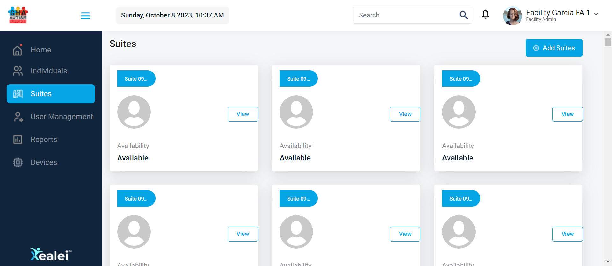And User must click Add Suite buttonorg.alphind.xealei.stepdefinition.Hooks.ssAfterStep(io.cucumber.java.Scenario)To verify the field 'Suite Name *' and 'Location *' is mandatoryThen User must verify "Add Suite" popup should be displayed after click the Add Suites buttonorg.alphind.xealei.stepdefinition.Hooks.ssAfterStep(io.cucumber.java.Scenario)To verify the field 'Suite Name *' and 'Location *' is mandatoryAnd User must perform all fields except Locationorg.alphind.xealei.stepdefinition.Hooks.ssAfterStep(io.cucumber.java.Scenario)To verify the field 'Suite Name *' and 'Location *' is mandatoryThen User must verify the error message under Location field "Please select facility location"org.alphind.xealei.stepdefinition.Hooks.ssAfterStep(io.cucumber.java.Scenario)To verify the field 'Suite Name *' and 'Location *' is mandatory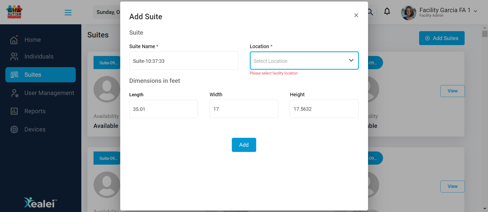And User must perform all fields except Suite Nameorg.alphind.xealei.stepdefinition.Hooks.ssAfterStep(io.cucumber.java.Scenario)To verify the field 'Suite Name *' and 'Location *' is mandatoryThen User must verify the error message under Suite Name field "Please Enter Suite Name"org.alphind.xealei.stepdefinition.Hooks.ssAfterStep(io.cucumber.java.Scenario)To verify the field 'Suite Name *' and 'Location *' is mandatoryorg.alphind.xealei.stepdefinition.Hooks.screenShot(io.cucumber.java.Scenario)To verify the field 'Suite Name *' and 'Location *' is mandatoryFailTo verify duplicate validation for 'Suite Name'Given User is on Xealei login pageorg.alphind.xealei.stepdefinition.Hooks.ssAfterStep(io.cucumber.java.Scenario)To verify duplicate validation for 'Suite Name'
When User must perform login with valid email and passwordorg.alphind.xealei.stepdefinition.Hooks.ssAfterStep(io.cucumber.java.Scenario)To verify the field 'Suite Name *' and 'Location *' is mandatoryThen User must verify once the page is navigate to HOME_DASHBOARD successfully "Home"org.alphind.xealei.stepdefinition.Hooks.ssAfterStep(io.cucumber.java.Scenario)To verify the field 'Suite Name *' and 'Location *' is mandatoryAnd User must navigate to Suite Moduleorg.alphind.xealei.stepdefinition.Hooks.ssAfterStep(io.cucumber.java.Scenario)To verify the field 'Suite Name *' and 'Location *' is mandatoryThen User must verify suite page is displayed "Suites"org.alphind.xealei.stepdefinition.Hooks.ssAfterStep(io.cucumber.java.Scenario)To verify the field 'Suite Name *' and 'Location *' is mandatory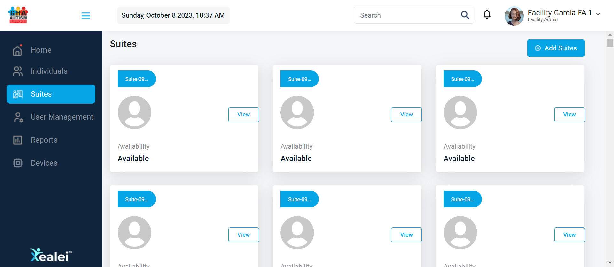And User must click Add Suite buttonorg.alphind.xealei.stepdefinition.Hooks.ssAfterStep(io.cucumber.java.Scenario)To verify the field 'Suite Name *' and 'Location *' is mandatoryThen User must verify "Add Suite" popup should be displayed after click the Add Suites buttonorg.alphind.xealei.stepdefinition.Hooks.ssAfterStep(io.cucumber.java.Scenario)To verify the field 'Suite Name *' and 'Location *' is mandatoryAnd User must perform all fields except Locationorg.alphind.xealei.stepdefinition.Hooks.ssAfterStep(io.cucumber.java.Scenario)To verify the field 'Suite Name *' and 'Location *' is mandatoryThen User must verify the error message under Location field "Please select facility location"org.alphind.xealei.stepdefinition.Hooks.ssAfterStep(io.cucumber.java.Scenario)To verify the field 'Suite Name *' and 'Location *' is mandatory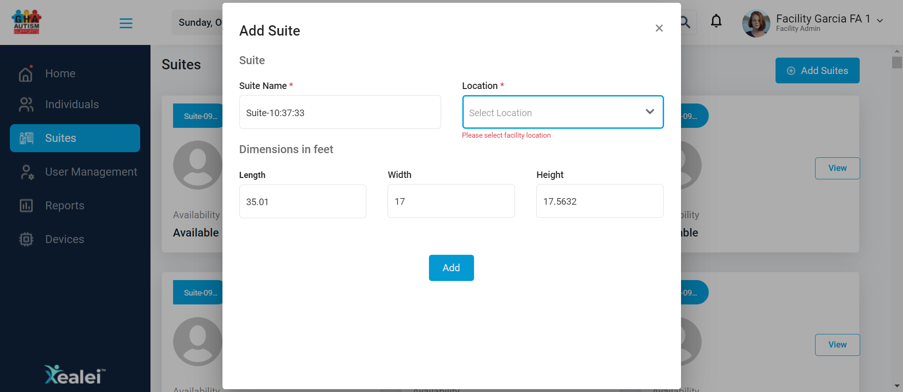And User must perform all fields except Suite Nameorg.alphind.xealei.stepdefinition.Hooks.ssAfterStep(io.cucumber.java.Scenario)To verify the field 'Suite Name *' and 'Location *' is mandatoryThen User must verify the error message under Suite Name field "Please Enter Suite Name"org.alphind.xealei.stepdefinition.Hooks.ssAfterStep(io.cucumber.java.Scenario)To verify the field 'Suite Name *' and 'Location *' is mandatoryorg.alphind.xealei.stepdefinition.Hooks.screenShot(io.cucumber.java.Scenario)To verify the field 'Suite Name *' and 'Location *' is mandatoryFailTo verify duplicate validation for 'Suite Name'Given User is on Xealei login pageorg.alphind.xealei.stepdefinition.Hooks.ssAfterStep(io.cucumber.java.Scenario)To verify duplicate validation for 'Suite Name' When User must perform login with valid email and passwordorg.alphind.xealei.stepdefinition.Hooks.ssAfterStep(io.cucumber.java.Scenario)To verify duplicate validation for 'Suite Name'Then User must verify once the page is navigate to HOME_DASHBOARD successfully "Home"org.alphind.xealei.stepdefinition.Hooks.ssAfterStep(io.cucumber.java.Scenario)To verify duplicate validation for 'Suite Name'And User must navigate to Suite Moduleorg.alphind.xealei.stepdefinition.Hooks.ssAfterStep(io.cucumber.java.Scenario)To verify duplicate validation for 'Suite Name'Then User must verify suite page is displayed "Suites"org.alphind.xealei.stepdefinition.Hooks.ssAfterStep(io.cucumber.java.Scenario)To verify duplicate validation for 'Suite Name'And User must click Add Suite buttonorg.alphind.xealei.stepdefinition.Hooks.ssAfterStep(io.cucumber.java.Scenario)To verify duplicate validation for 'Suite Name'Then User must verify "Add Suite" popup should be displayed after click the Add Suites buttonorg.alphind.xealei.stepdefinition.Hooks.ssAfterStep(io.cucumber.java.Scenario)To verify duplicate validation for 'Suite Name'And User must perform only mandatory fields with existing suiteName and locationorg.alphind.xealei.stepdefinition.Hooks.ssAfterStep(io.cucumber.java.Scenario)To verify duplicate validation for 'Suite Name'Then User must verify the toast message after perform dupicate datas "Suite Name already exists."org.alphind.xealei.stepdefinition.Hooks.ssAfterStep(io.cucumber.java.Scenario)To verify duplicate validation for 'Suite Name'
When User must perform login with valid email and passwordorg.alphind.xealei.stepdefinition.Hooks.ssAfterStep(io.cucumber.java.Scenario)To verify duplicate validation for 'Suite Name'Then User must verify once the page is navigate to HOME_DASHBOARD successfully "Home"org.alphind.xealei.stepdefinition.Hooks.ssAfterStep(io.cucumber.java.Scenario)To verify duplicate validation for 'Suite Name'And User must navigate to Suite Moduleorg.alphind.xealei.stepdefinition.Hooks.ssAfterStep(io.cucumber.java.Scenario)To verify duplicate validation for 'Suite Name'Then User must verify suite page is displayed "Suites"org.alphind.xealei.stepdefinition.Hooks.ssAfterStep(io.cucumber.java.Scenario)To verify duplicate validation for 'Suite Name'And User must click Add Suite buttonorg.alphind.xealei.stepdefinition.Hooks.ssAfterStep(io.cucumber.java.Scenario)To verify duplicate validation for 'Suite Name'Then User must verify "Add Suite" popup should be displayed after click the Add Suites buttonorg.alphind.xealei.stepdefinition.Hooks.ssAfterStep(io.cucumber.java.Scenario)To verify duplicate validation for 'Suite Name'And User must perform only mandatory fields with existing suiteName and locationorg.alphind.xealei.stepdefinition.Hooks.ssAfterStep(io.cucumber.java.Scenario)To verify duplicate validation for 'Suite Name'Then User must verify the toast message after perform dupicate datas "Suite Name already exists."org.alphind.xealei.stepdefinition.Hooks.ssAfterStep(io.cucumber.java.Scenario)To verify duplicate validation for 'Suite Name' org.alphind.xealei.stepdefinition.Hooks.screenShot(io.cucumber.java.Scenario)To verify duplicate validation for 'Suite Name'PassTo verify duplicate Suite name with different 'Location'Given User is on Xealei login pageorg.alphind.xealei.stepdefinition.Hooks.ssAfterStep(io.cucumber.java.Scenario)To verify duplicate Suite name with different 'Location'
org.alphind.xealei.stepdefinition.Hooks.screenShot(io.cucumber.java.Scenario)To verify duplicate validation for 'Suite Name'PassTo verify duplicate Suite name with different 'Location'Given User is on Xealei login pageorg.alphind.xealei.stepdefinition.Hooks.ssAfterStep(io.cucumber.java.Scenario)To verify duplicate Suite name with different 'Location' When User must perform login with valid email and passwordorg.alphind.xealei.stepdefinition.Hooks.ssAfterStep(io.cucumber.java.Scenario)To verify duplicate Suite name with different 'Location'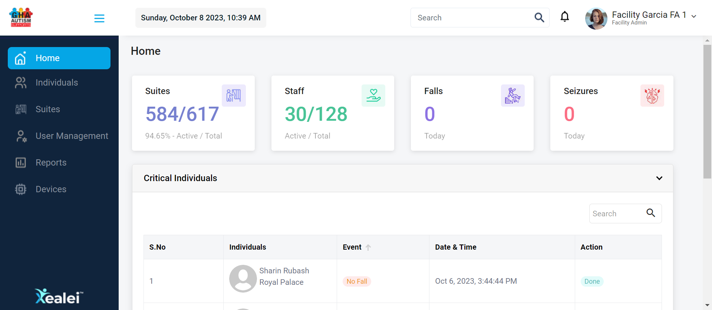Then User must verify once the page is navigate to HOME_DASHBOARD successfully "Home"org.alphind.xealei.stepdefinition.Hooks.ssAfterStep(io.cucumber.java.Scenario)To verify duplicate Suite name with different 'Location'And User must navigate to Suite Moduleorg.alphind.xealei.stepdefinition.Hooks.ssAfterStep(io.cucumber.java.Scenario)To verify duplicate Suite name with different 'Location'Then User must verify suite page is displayed "Suites"org.alphind.xealei.stepdefinition.Hooks.ssAfterStep(io.cucumber.java.Scenario)To verify duplicate Suite name with different 'Location'And User must click Add Suite buttonorg.alphind.xealei.stepdefinition.Hooks.ssAfterStep(io.cucumber.java.Scenario)To verify duplicate Suite name with different 'Location'
When User must perform login with valid email and passwordorg.alphind.xealei.stepdefinition.Hooks.ssAfterStep(io.cucumber.java.Scenario)To verify duplicate Suite name with different 'Location'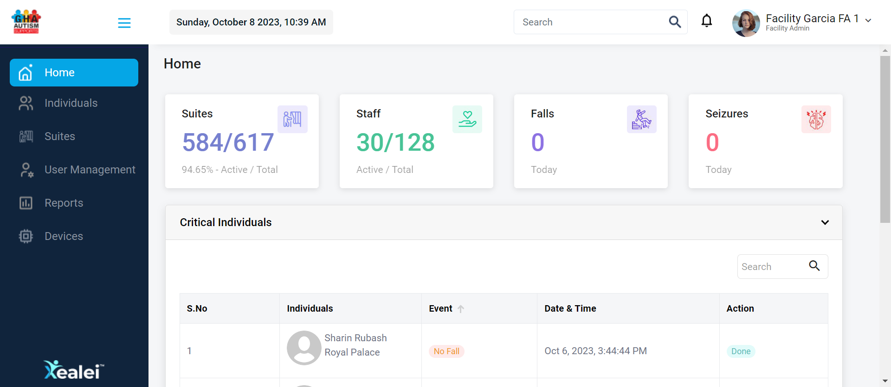Then User must verify once the page is navigate to HOME_DASHBOARD successfully "Home"org.alphind.xealei.stepdefinition.Hooks.ssAfterStep(io.cucumber.java.Scenario)To verify duplicate Suite name with different 'Location'And User must navigate to Suite Moduleorg.alphind.xealei.stepdefinition.Hooks.ssAfterStep(io.cucumber.java.Scenario)To verify duplicate Suite name with different 'Location'Then User must verify suite page is displayed "Suites"org.alphind.xealei.stepdefinition.Hooks.ssAfterStep(io.cucumber.java.Scenario)To verify duplicate Suite name with different 'Location'And User must click Add Suite buttonorg.alphind.xealei.stepdefinition.Hooks.ssAfterStep(io.cucumber.java.Scenario)To verify duplicate Suite name with different 'Location' Then User must verify "Add Suite" popup should be displayed after click the Add Suites buttonorg.alphind.xealei.stepdefinition.Hooks.ssAfterStep(io.cucumber.java.Scenario)To verify duplicate Suite name with different 'Location'
Then User must verify "Add Suite" popup should be displayed after click the Add Suites buttonorg.alphind.xealei.stepdefinition.Hooks.ssAfterStep(io.cucumber.java.Scenario)To verify duplicate Suite name with different 'Location' And User must perform only mandatory fields with existing suiteName and different locationorg.alphind.xealei.stepdefinition.Hooks.ssAfterStep(io.cucumber.java.Scenario)To verify duplicate Suite name with different 'Location'Then User must verify the toast message after perform existing suiteName and different location "Saved Successfully!!"org.alphind.xealei.stepdefinition.Hooks.ssAfterStep(io.cucumber.java.Scenario)To verify duplicate Suite name with different 'Location'PassTo verify validation message is displayed under mandatory fields also verify the user able to close the Add Suite popupGiven User is on Xealei login pageorg.alphind.xealei.stepdefinition.Hooks.ssAfterStep(io.cucumber.java.Scenario)To verify validation message is displayed under mandatory fields also verify the user able to close the Add Suite popup
And User must perform only mandatory fields with existing suiteName and different locationorg.alphind.xealei.stepdefinition.Hooks.ssAfterStep(io.cucumber.java.Scenario)To verify duplicate Suite name with different 'Location'Then User must verify the toast message after perform existing suiteName and different location "Saved Successfully!!"org.alphind.xealei.stepdefinition.Hooks.ssAfterStep(io.cucumber.java.Scenario)To verify duplicate Suite name with different 'Location'PassTo verify validation message is displayed under mandatory fields also verify the user able to close the Add Suite popupGiven User is on Xealei login pageorg.alphind.xealei.stepdefinition.Hooks.ssAfterStep(io.cucumber.java.Scenario)To verify validation message is displayed under mandatory fields also verify the user able to close the Add Suite popup When User must perform login with valid email and passwordorg.alphind.xealei.stepdefinition.Hooks.ssAfterStep(io.cucumber.java.Scenario)To verify validation message is displayed under mandatory fields also verify the user able to close the Add Suite popupThen User must verify once the page is navigate to HOME_DASHBOARD successfully "Home"org.alphind.xealei.stepdefinition.Hooks.ssAfterStep(io.cucumber.java.Scenario)To verify validation message is displayed under mandatory fields also verify the user able to close the Add Suite popupAnd User must navigate to Suite Moduleorg.alphind.xealei.stepdefinition.Hooks.ssAfterStep(io.cucumber.java.Scenario)To verify validation message is displayed under mandatory fields also verify the user able to close the Add Suite popup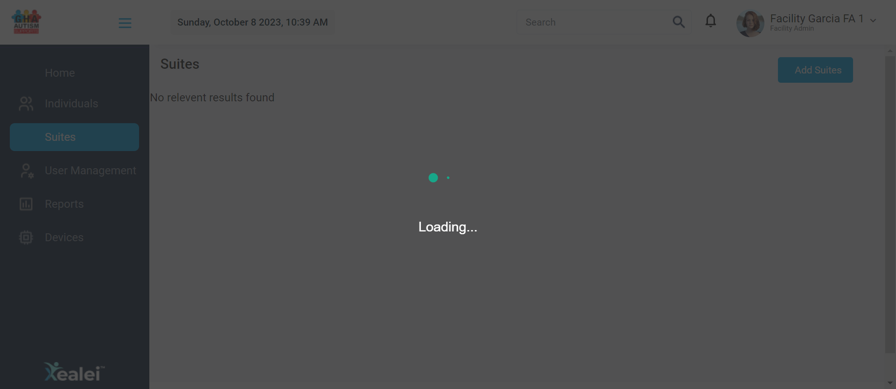Then User must verify suite page is displayed "Suites"org.alphind.xealei.stepdefinition.Hooks.ssAfterStep(io.cucumber.java.Scenario)To verify validation message is displayed under mandatory fields also verify the user able to close the Add Suite popupAnd User must click Add Suite buttonorg.alphind.xealei.stepdefinition.Hooks.ssAfterStep(io.cucumber.java.Scenario)To verify validation message is displayed under mandatory fields also verify the user able to close the Add Suite popup
When User must perform login with valid email and passwordorg.alphind.xealei.stepdefinition.Hooks.ssAfterStep(io.cucumber.java.Scenario)To verify validation message is displayed under mandatory fields also verify the user able to close the Add Suite popupThen User must verify once the page is navigate to HOME_DASHBOARD successfully "Home"org.alphind.xealei.stepdefinition.Hooks.ssAfterStep(io.cucumber.java.Scenario)To verify validation message is displayed under mandatory fields also verify the user able to close the Add Suite popupAnd User must navigate to Suite Moduleorg.alphind.xealei.stepdefinition.Hooks.ssAfterStep(io.cucumber.java.Scenario)To verify validation message is displayed under mandatory fields also verify the user able to close the Add Suite popup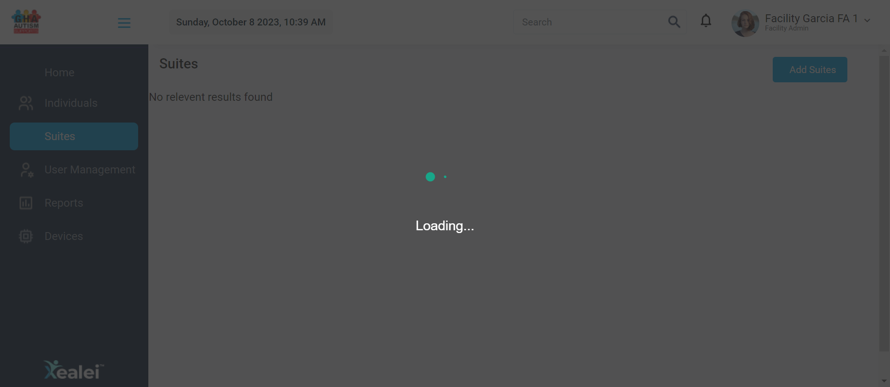Then User must verify suite page is displayed "Suites"org.alphind.xealei.stepdefinition.Hooks.ssAfterStep(io.cucumber.java.Scenario)To verify validation message is displayed under mandatory fields also verify the user able to close the Add Suite popupAnd User must click Add Suite buttonorg.alphind.xealei.stepdefinition.Hooks.ssAfterStep(io.cucumber.java.Scenario)To verify validation message is displayed under mandatory fields also verify the user able to close the Add Suite popup Then User must verify "Add Suite" popup should be displayed after click the Add Suites buttonorg.alphind.xealei.stepdefinition.Hooks.ssAfterStep(io.cucumber.java.Scenario)To verify validation message is displayed under mandatory fields also verify the user able to close the Add Suite popup
Then User must verify "Add Suite" popup should be displayed after click the Add Suites buttonorg.alphind.xealei.stepdefinition.Hooks.ssAfterStep(io.cucumber.java.Scenario)To verify validation message is displayed under mandatory fields also verify the user able to close the Add Suite popup And User must click Add buttonorg.alphind.xealei.stepdefinition.Hooks.ssAfterStep(io.cucumber.java.Scenario)To verify validation message is displayed under mandatory fields also verify the user able to close the Add Suite popup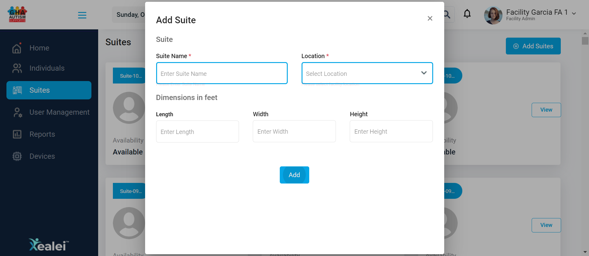Then User must verify the error message contains for Mandatory fields "Please Enter Suite Name" and "Please select facility location"org.alphind.xealei.stepdefinition.Hooks.ssAfterStep(io.cucumber.java.Scenario)To verify validation message is displayed under mandatory fields also verify the user able to close the Add Suite popupAnd User must close the Add Suite popuporg.alphind.xealei.stepdefinition.Hooks.ssAfterStep(io.cucumber.java.Scenario)To verify validation message is displayed under mandatory fields also verify the user able to close the Add Suite popupThen User must verify the Add Suite popup is closed successfullyorg.alphind.xealei.stepdefinition.Hooks.ssAfterStep(io.cucumber.java.Scenario)To verify validation message is displayed under mandatory fields also verify the user able to close the Add Suite popupPassTo verify user able to Add/Create Suites by entering only Non-Mandatory fieldsGiven User is on Xealei login pageorg.alphind.xealei.stepdefinition.Hooks.ssAfterStep(io.cucumber.java.Scenario)To verify user able to Add/Create Suites by entering only Non-Mandatory fields
And User must click Add buttonorg.alphind.xealei.stepdefinition.Hooks.ssAfterStep(io.cucumber.java.Scenario)To verify validation message is displayed under mandatory fields also verify the user able to close the Add Suite popup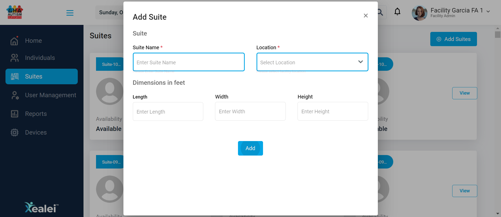Then User must verify the error message contains for Mandatory fields "Please Enter Suite Name" and "Please select facility location"org.alphind.xealei.stepdefinition.Hooks.ssAfterStep(io.cucumber.java.Scenario)To verify validation message is displayed under mandatory fields also verify the user able to close the Add Suite popupAnd User must close the Add Suite popuporg.alphind.xealei.stepdefinition.Hooks.ssAfterStep(io.cucumber.java.Scenario)To verify validation message is displayed under mandatory fields also verify the user able to close the Add Suite popupThen User must verify the Add Suite popup is closed successfullyorg.alphind.xealei.stepdefinition.Hooks.ssAfterStep(io.cucumber.java.Scenario)To verify validation message is displayed under mandatory fields also verify the user able to close the Add Suite popupPassTo verify user able to Add/Create Suites by entering only Non-Mandatory fieldsGiven User is on Xealei login pageorg.alphind.xealei.stepdefinition.Hooks.ssAfterStep(io.cucumber.java.Scenario)To verify user able to Add/Create Suites by entering only Non-Mandatory fields When User must perform login with valid email and passwordorg.alphind.xealei.stepdefinition.Hooks.ssAfterStep(io.cucumber.java.Scenario)To verify user able to Add/Create Suites by entering only Non-Mandatory fieldsThen User must verify once the page is navigate to HOME_DASHBOARD successfully "Home"org.alphind.xealei.stepdefinition.Hooks.ssAfterStep(io.cucumber.java.Scenario)To verify user able to Add/Create Suites by entering only Non-Mandatory fields
When User must perform login with valid email and passwordorg.alphind.xealei.stepdefinition.Hooks.ssAfterStep(io.cucumber.java.Scenario)To verify user able to Add/Create Suites by entering only Non-Mandatory fieldsThen User must verify once the page is navigate to HOME_DASHBOARD successfully "Home"org.alphind.xealei.stepdefinition.Hooks.ssAfterStep(io.cucumber.java.Scenario)To verify user able to Add/Create Suites by entering only Non-Mandatory fields And User must navigate to Suite Moduleorg.alphind.xealei.stepdefinition.Hooks.ssAfterStep(io.cucumber.java.Scenario)To verify user able to Add/Create Suites by entering only Non-Mandatory fieldsThen User must verify suite page is displayed "Suites"org.alphind.xealei.stepdefinition.Hooks.ssAfterStep(io.cucumber.java.Scenario)To verify user able to Add/Create Suites by entering only Non-Mandatory fieldsAnd User must click Add Suite buttonorg.alphind.xealei.stepdefinition.Hooks.ssAfterStep(io.cucumber.java.Scenario)To verify user able to Add/Create Suites by entering only Non-Mandatory fields
And User must navigate to Suite Moduleorg.alphind.xealei.stepdefinition.Hooks.ssAfterStep(io.cucumber.java.Scenario)To verify user able to Add/Create Suites by entering only Non-Mandatory fieldsThen User must verify suite page is displayed "Suites"org.alphind.xealei.stepdefinition.Hooks.ssAfterStep(io.cucumber.java.Scenario)To verify user able to Add/Create Suites by entering only Non-Mandatory fieldsAnd User must click Add Suite buttonorg.alphind.xealei.stepdefinition.Hooks.ssAfterStep(io.cucumber.java.Scenario)To verify user able to Add/Create Suites by entering only Non-Mandatory fields Then User must verify "Add Suite" popup should be displayed after click the Add Suites buttonorg.alphind.xealei.stepdefinition.Hooks.ssAfterStep(io.cucumber.java.Scenario)To verify user able to Add/Create Suites by entering only Non-Mandatory fields
Then User must verify "Add Suite" popup should be displayed after click the Add Suites buttonorg.alphind.xealei.stepdefinition.Hooks.ssAfterStep(io.cucumber.java.Scenario)To verify user able to Add/Create Suites by entering only Non-Mandatory fields And User must perform only non-mandatory fieldsorg.alphind.xealei.stepdefinition.Hooks.ssAfterStep(io.cucumber.java.Scenario)To verify user able to Add/Create Suites by entering only Non-Mandatory fieldsThen User must verify the error message contains for Mandatory fields "Please Enter Suite Name" and "Please select facility location"org.alphind.xealei.stepdefinition.Hooks.ssAfterStep(io.cucumber.java.Scenario)To verify user able to Add/Create Suites by entering only Non-Mandatory fieldsPassTo verify user able to Add/Create Suites by entering only Mandatory fields and also verify the 'Bread Crums' button in Suites view screenGiven User is on Xealei login pageorg.alphind.xealei.stepdefinition.Hooks.ssAfterStep(io.cucumber.java.Scenario)To verify user able to Add/Create Suites by entering only Mandatory fields and also verify the 'Bread Crums' button in Suites view screen
And User must perform only non-mandatory fieldsorg.alphind.xealei.stepdefinition.Hooks.ssAfterStep(io.cucumber.java.Scenario)To verify user able to Add/Create Suites by entering only Non-Mandatory fieldsThen User must verify the error message contains for Mandatory fields "Please Enter Suite Name" and "Please select facility location"org.alphind.xealei.stepdefinition.Hooks.ssAfterStep(io.cucumber.java.Scenario)To verify user able to Add/Create Suites by entering only Non-Mandatory fieldsPassTo verify user able to Add/Create Suites by entering only Mandatory fields and also verify the 'Bread Crums' button in Suites view screenGiven User is on Xealei login pageorg.alphind.xealei.stepdefinition.Hooks.ssAfterStep(io.cucumber.java.Scenario)To verify user able to Add/Create Suites by entering only Mandatory fields and also verify the 'Bread Crums' button in Suites view screen When User must perform login with valid email and passwordorg.alphind.xealei.stepdefinition.Hooks.ssAfterStep(io.cucumber.java.Scenario)To verify user able to Add/Create Suites by entering only Mandatory fields and also verify the 'Bread Crums' button in Suites view screenThen User must verify once the page is navigate to HOME_DASHBOARD successfully "Home"org.alphind.xealei.stepdefinition.Hooks.ssAfterStep(io.cucumber.java.Scenario)To verify user able to Add/Create Suites by entering only Mandatory fields and also verify the 'Bread Crums' button in Suites view screenAnd User must navigate to Suite Moduleorg.alphind.xealei.stepdefinition.Hooks.ssAfterStep(io.cucumber.java.Scenario)To verify user able to Add/Create Suites by entering only Mandatory fields and also verify the 'Bread Crums' button in Suites view screenThen User must verify suite page is displayed "Suites"org.alphind.xealei.stepdefinition.Hooks.ssAfterStep(io.cucumber.java.Scenario)To verify user able to Add/Create Suites by entering only Mandatory fields and also verify the 'Bread Crums' button in Suites view screenAnd User must click Add Suite buttonorg.alphind.xealei.stepdefinition.Hooks.ssAfterStep(io.cucumber.java.Scenario)To verify user able to Add/Create Suites by entering only Mandatory fields and also verify the 'Bread Crums' button in Suites view screenThen User must verify "Add Suite" popup should be displayed after click the Add Suites buttonorg.alphind.xealei.stepdefinition.Hooks.ssAfterStep(io.cucumber.java.Scenario)To verify user able to Add/Create Suites by entering only Mandatory fields and also verify the 'Bread Crums' button in Suites view screenAnd User must perform only mandatory fieldsorg.alphind.xealei.stepdefinition.Hooks.ssAfterStep(io.cucumber.java.Scenario)To verify user able to Add/Create Suites by entering only Mandatory fields and also verify the 'Bread Crums' button in Suites view screen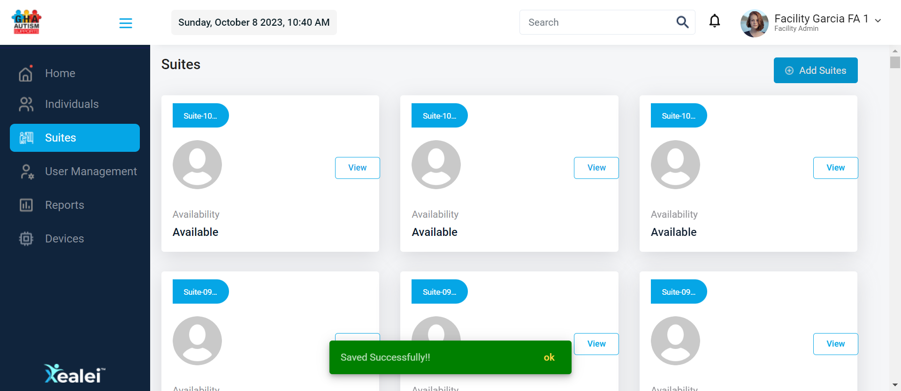Then User must verify the toast message after perform only mandatory fields "Saved Successfully!!"org.alphind.xealei.stepdefinition.Hooks.ssAfterStep(io.cucumber.java.Scenario)To verify user able to Add/Create Suites by entering only Mandatory fields and also verify the 'Bread Crums' button in Suites view screenThen User must verify mandatory fields are created successsfullyorg.alphind.xealei.stepdefinition.Hooks.ssAfterStep(io.cucumber.java.Scenario)To verify user able to Add/Create Suites by entering only Mandatory fields and also verify the 'Bread Crums' button in Suites view screenPassTo verify user able to Add/Create Suites by entering all fieldsGiven User is on Xealei login pageorg.alphind.xealei.stepdefinition.Hooks.ssAfterStep(io.cucumber.java.Scenario)To verify user able to Add/Create Suites by entering all fields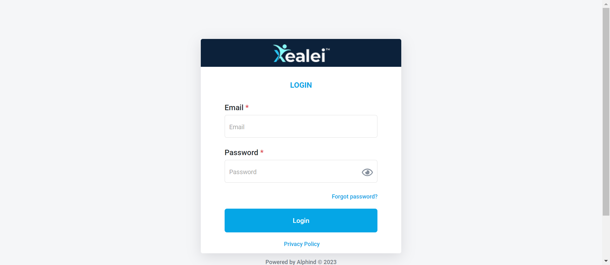When User must perform login with valid email and passwordorg.alphind.xealei.stepdefinition.Hooks.ssAfterStep(io.cucumber.java.Scenario)To verify user able to Add/Create Suites by entering all fieldsThen User must verify once the page is navigate to HOME_DASHBOARD successfully "Home"org.alphind.xealei.stepdefinition.Hooks.ssAfterStep(io.cucumber.java.Scenario)To verify user able to Add/Create Suites by entering all fieldsAnd User must navigate to Suite Moduleorg.alphind.xealei.stepdefinition.Hooks.ssAfterStep(io.cucumber.java.Scenario)To verify user able to Add/Create Suites by entering all fields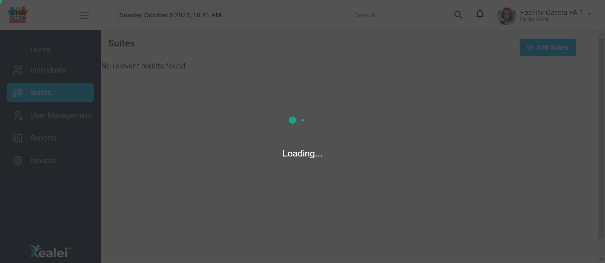Then User must verify suite page is displayed "Suites"org.alphind.xealei.stepdefinition.Hooks.ssAfterStep(io.cucumber.java.Scenario)To verify user able to Add/Create Suites by entering all fieldsAnd User must click Add Suite buttonorg.alphind.xealei.stepdefinition.Hooks.ssAfterStep(io.cucumber.java.Scenario)To verify user able to Add/Create Suites by entering all fieldsThen User must verify "Add Suite" popup should be displayed after click the Add Suites buttonorg.alphind.xealei.stepdefinition.Hooks.ssAfterStep(io.cucumber.java.Scenario)To verify user able to Add/Create Suites by entering all fieldsAnd User must perform all fields and verify the toast message after perform all fields "Saved Successfully!!"org.alphind.xealei.stepdefinition.Hooks.ssAfterStep(io.cucumber.java.Scenario)To verify user able to Add/Create Suites by entering all fieldsThen User must verify all fields are created successsfullyorg.alphind.xealei.stepdefinition.Hooks.ssAfterStep(io.cucumber.java.Scenario)To verify user able to Add/Create Suites by entering all fieldsPassTo verify 'Bread Crums' button in Suites view screenGiven User is on Xealei login pageorg.alphind.xealei.stepdefinition.Hooks.ssAfterStep(io.cucumber.java.Scenario)To verify 'Bread Crums' button in Suites view screen
When User must perform login with valid email and passwordorg.alphind.xealei.stepdefinition.Hooks.ssAfterStep(io.cucumber.java.Scenario)To verify user able to Add/Create Suites by entering only Mandatory fields and also verify the 'Bread Crums' button in Suites view screenThen User must verify once the page is navigate to HOME_DASHBOARD successfully "Home"org.alphind.xealei.stepdefinition.Hooks.ssAfterStep(io.cucumber.java.Scenario)To verify user able to Add/Create Suites by entering only Mandatory fields and also verify the 'Bread Crums' button in Suites view screenAnd User must navigate to Suite Moduleorg.alphind.xealei.stepdefinition.Hooks.ssAfterStep(io.cucumber.java.Scenario)To verify user able to Add/Create Suites by entering only Mandatory fields and also verify the 'Bread Crums' button in Suites view screenThen User must verify suite page is displayed "Suites"org.alphind.xealei.stepdefinition.Hooks.ssAfterStep(io.cucumber.java.Scenario)To verify user able to Add/Create Suites by entering only Mandatory fields and also verify the 'Bread Crums' button in Suites view screenAnd User must click Add Suite buttonorg.alphind.xealei.stepdefinition.Hooks.ssAfterStep(io.cucumber.java.Scenario)To verify user able to Add/Create Suites by entering only Mandatory fields and also verify the 'Bread Crums' button in Suites view screenThen User must verify "Add Suite" popup should be displayed after click the Add Suites buttonorg.alphind.xealei.stepdefinition.Hooks.ssAfterStep(io.cucumber.java.Scenario)To verify user able to Add/Create Suites by entering only Mandatory fields and also verify the 'Bread Crums' button in Suites view screenAnd User must perform only mandatory fieldsorg.alphind.xealei.stepdefinition.Hooks.ssAfterStep(io.cucumber.java.Scenario)To verify user able to Add/Create Suites by entering only Mandatory fields and also verify the 'Bread Crums' button in Suites view screen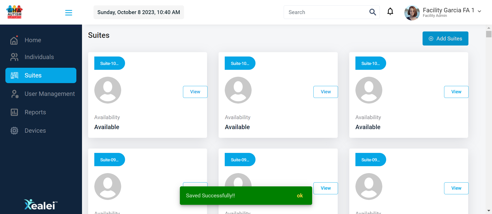Then User must verify the toast message after perform only mandatory fields "Saved Successfully!!"org.alphind.xealei.stepdefinition.Hooks.ssAfterStep(io.cucumber.java.Scenario)To verify user able to Add/Create Suites by entering only Mandatory fields and also verify the 'Bread Crums' button in Suites view screenThen User must verify mandatory fields are created successsfullyorg.alphind.xealei.stepdefinition.Hooks.ssAfterStep(io.cucumber.java.Scenario)To verify user able to Add/Create Suites by entering only Mandatory fields and also verify the 'Bread Crums' button in Suites view screenPassTo verify user able to Add/Create Suites by entering all fieldsGiven User is on Xealei login pageorg.alphind.xealei.stepdefinition.Hooks.ssAfterStep(io.cucumber.java.Scenario)To verify user able to Add/Create Suites by entering all fields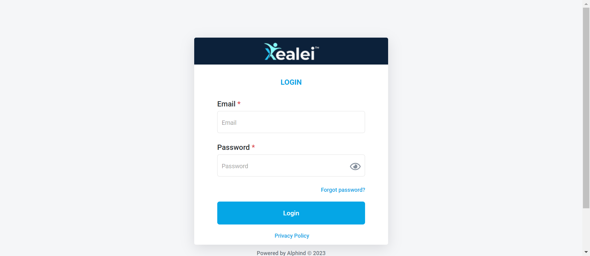When User must perform login with valid email and passwordorg.alphind.xealei.stepdefinition.Hooks.ssAfterStep(io.cucumber.java.Scenario)To verify user able to Add/Create Suites by entering all fieldsThen User must verify once the page is navigate to HOME_DASHBOARD successfully "Home"org.alphind.xealei.stepdefinition.Hooks.ssAfterStep(io.cucumber.java.Scenario)To verify user able to Add/Create Suites by entering all fieldsAnd User must navigate to Suite Moduleorg.alphind.xealei.stepdefinition.Hooks.ssAfterStep(io.cucumber.java.Scenario)To verify user able to Add/Create Suites by entering all fields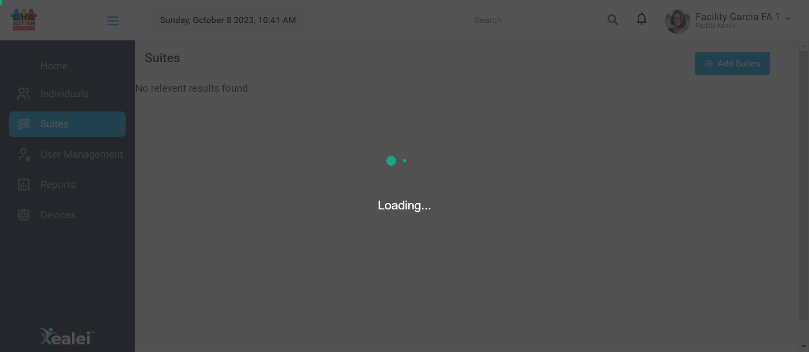Then User must verify suite page is displayed "Suites"org.alphind.xealei.stepdefinition.Hooks.ssAfterStep(io.cucumber.java.Scenario)To verify user able to Add/Create Suites by entering all fieldsAnd User must click Add Suite buttonorg.alphind.xealei.stepdefinition.Hooks.ssAfterStep(io.cucumber.java.Scenario)To verify user able to Add/Create Suites by entering all fieldsThen User must verify "Add Suite" popup should be displayed after click the Add Suites buttonorg.alphind.xealei.stepdefinition.Hooks.ssAfterStep(io.cucumber.java.Scenario)To verify user able to Add/Create Suites by entering all fieldsAnd User must perform all fields and verify the toast message after perform all fields "Saved Successfully!!"org.alphind.xealei.stepdefinition.Hooks.ssAfterStep(io.cucumber.java.Scenario)To verify user able to Add/Create Suites by entering all fieldsThen User must verify all fields are created successsfullyorg.alphind.xealei.stepdefinition.Hooks.ssAfterStep(io.cucumber.java.Scenario)To verify user able to Add/Create Suites by entering all fieldsPassTo verify 'Bread Crums' button in Suites view screenGiven User is on Xealei login pageorg.alphind.xealei.stepdefinition.Hooks.ssAfterStep(io.cucumber.java.Scenario)To verify 'Bread Crums' button in Suites view screen When User must perform login with valid email and passwordorg.alphind.xealei.stepdefinition.Hooks.ssAfterStep(io.cucumber.java.Scenario)To verify 'Bread Crums' button in Suites view screenThen User must verify once the page is navigate to HOME_DASHBOARD successfully "Home"org.alphind.xealei.stepdefinition.Hooks.ssAfterStep(io.cucumber.java.Scenario)To verify 'Bread Crums' button in Suites view screenAnd User must navigate to Suite Moduleorg.alphind.xealei.stepdefinition.Hooks.ssAfterStep(io.cucumber.java.Scenario)To verify 'Bread Crums' button in Suites view screen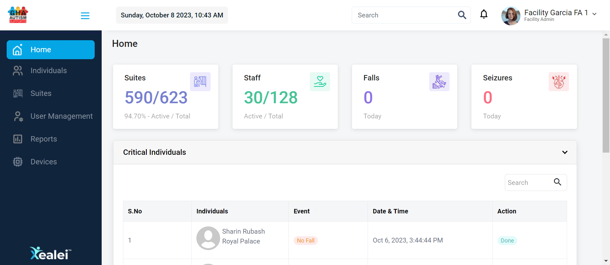Then User must verify suite page is displayed "Suites"org.alphind.xealei.stepdefinition.Hooks.ssAfterStep(io.cucumber.java.Scenario)To verify 'Bread Crums' button in Suites view screenAnd User must search the existing suiteName and click the image in suites screenorg.alphind.xealei.stepdefinition.Hooks.ssAfterStep(io.cucumber.java.Scenario)To verify 'Bread Crums' button in Suites view screenThen User must verify the breadcrums link should be display with module suite name > selected suite nameorg.alphind.xealei.stepdefinition.Hooks.ssAfterStep(io.cucumber.java.Scenario)To verify 'Bread Crums' button in Suites view screen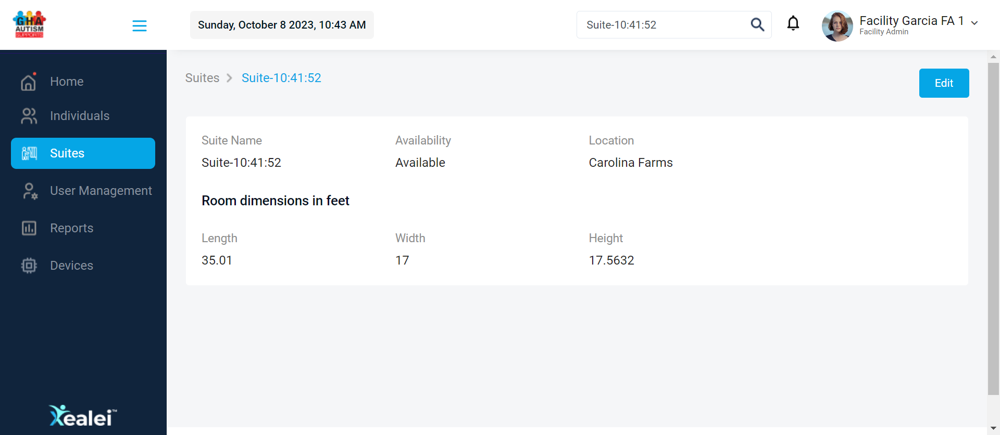Then User must verify after click the breadcrums link it should be return to Suite searched pageorg.alphind.xealei.stepdefinition.Hooks.ssAfterStep(io.cucumber.java.Scenario)To verify 'Bread Crums' button in Suites view screen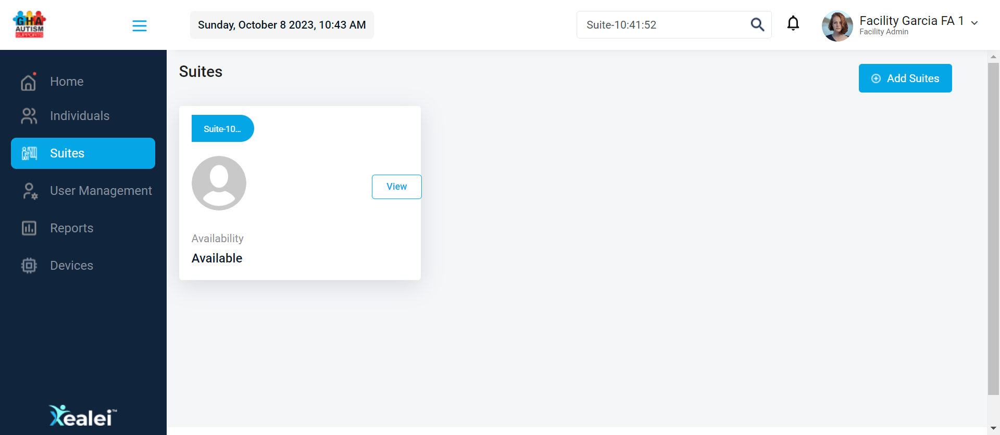
When User must perform login with valid email and passwordorg.alphind.xealei.stepdefinition.Hooks.ssAfterStep(io.cucumber.java.Scenario)To verify 'Bread Crums' button in Suites view screenThen User must verify once the page is navigate to HOME_DASHBOARD successfully "Home"org.alphind.xealei.stepdefinition.Hooks.ssAfterStep(io.cucumber.java.Scenario)To verify 'Bread Crums' button in Suites view screenAnd User must navigate to Suite Moduleorg.alphind.xealei.stepdefinition.Hooks.ssAfterStep(io.cucumber.java.Scenario)To verify 'Bread Crums' button in Suites view screen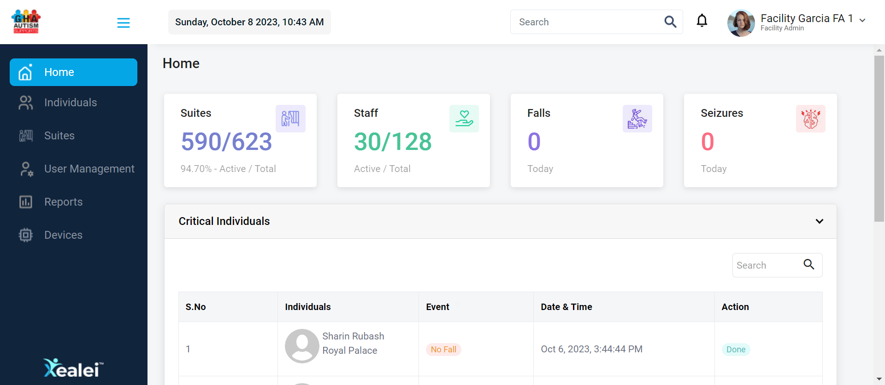Then User must verify suite page is displayed "Suites"org.alphind.xealei.stepdefinition.Hooks.ssAfterStep(io.cucumber.java.Scenario)To verify 'Bread Crums' button in Suites view screenAnd User must search the existing suiteName and click the image in suites screenorg.alphind.xealei.stepdefinition.Hooks.ssAfterStep(io.cucumber.java.Scenario)To verify 'Bread Crums' button in Suites view screenThen User must verify the breadcrums link should be display with module suite name > selected suite nameorg.alphind.xealei.stepdefinition.Hooks.ssAfterStep(io.cucumber.java.Scenario)To verify 'Bread Crums' button in Suites view screen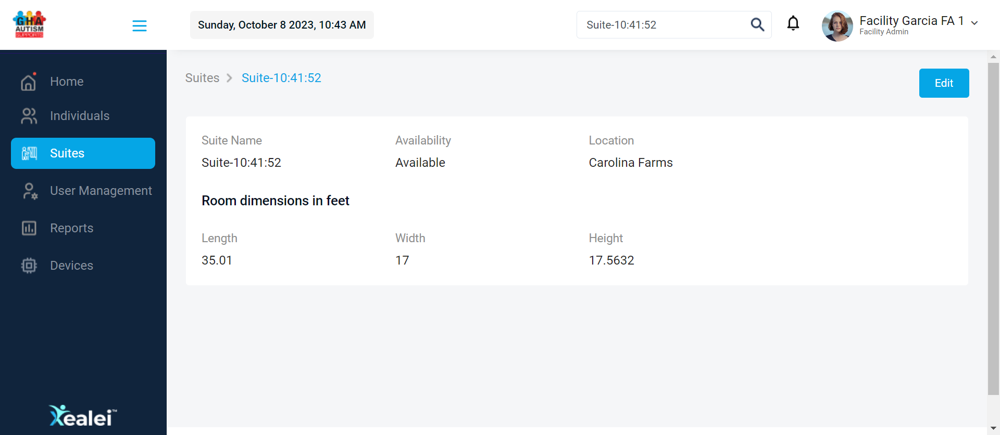Then User must verify after click the breadcrums link it should be return to Suite searched pageorg.alphind.xealei.stepdefinition.Hooks.ssAfterStep(io.cucumber.java.Scenario)To verify 'Bread Crums' button in Suites view screen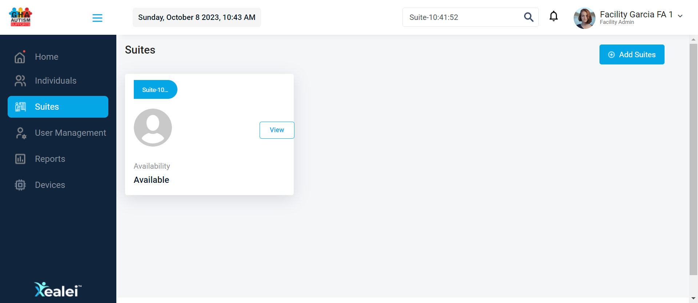
-
org.openqa.selenium.NoSuchElementException
2 tests
org.openqa.selenium.NoSuchElementException
2 failedStatus Timestamp TestName Fail 10:37:41 AM Then User must verify the error message under Suite Name field "Please Enter Suite Name" Verify Xealei Suites > Add Suites Page.To verify the field 'Suite Name *' and 'Location *' is mandatory.Then User must verify the error message under Suite Name field "Please Enter Suite Name"Fail 10:38:49 AM Then User must verify the toast message after perform dupicate datas "Suite Name already exists." Verify Xealei Suites > Add Suites Page.To verify duplicate validation for 'Suite Name'.Then User must verify the toast message after perform dupicate datas "Suite Name already exists."
-
@AddSuites-AllScenarios
9 tests
@AddSuites-AllScenarios
7 passed 2 failedStatus Timestamp TestName Pass 10:36:37 AM To verify the web url link for suite page Verify Xealei Suites > Add Suites Page.To verify the web url link for suite pageFail 10:37:06 AM To verify the field 'Suite Name *' and 'Location *' is mandatory Verify Xealei Suites > Add Suites Page.To verify the field 'Suite Name *' and 'Location *' is mandatoryFail 10:38:04 AM To verify duplicate validation for 'Suite Name' Verify Xealei Suites > Add Suites Page.To verify duplicate validation for 'Suite Name'Pass 10:39:12 AM To verify duplicate Suite name with different 'Location' Verify Xealei Suites > Add Suites Page.To verify duplicate Suite name with different 'Location'Pass 10:39:45 AM To verify validation message is displayed under mandatory fields also verify the user able to close the Add Suite popup Verify Xealei Suites > Add Suites Page.To verify validation message is displayed under mandatory fields also verify the user able to close the Add Suite popupPass 10:40:12 AM To verify user able to Add/Create Suites by entering only Non-Mandatory fields Verify Xealei Suites > Add Suites Page.To verify user able to Add/Create Suites by entering only Non-Mandatory fieldsPass 10:40:41 AM To verify user able to Add/Create Suites by entering only Mandatory fields and also verify the 'Bread Crums' button in Suites view screen Verify Xealei Suites > Add Suites Page.To verify user able to Add/Create Suites by entering only Mandatory fields and also verify the 'Bread Crums' button in Suites view screenPass 10:41:24 AM To verify user able to Add/Create Suites by entering all fields Verify Xealei Suites > Add Suites Page.To verify user able to Add/Create Suites by entering all fieldsPass 10:43:27 AM To verify 'Bread Crums' button in Suites view screen Verify Xealei Suites > Add Suites Page.To verify 'Bread Crums' button in Suites view screen -
@InProgress
1 tests
@InProgress
1 failedStatus Timestamp TestName Fail 10:38:04 AM To verify duplicate validation for 'Suite Name' Verify Xealei Suites > Add Suites Page.To verify duplicate validation for 'Suite Name'
Started
08 Oct, 2023 10:36:35
Ended
08 Oct, 2023 10:44:05
Features Passed
0
Features Failed
1
Features
Scenarios
Steps
Timeline
Tags
| Name | Passed | Failed | Skipped | Others | Passed % |
|---|---|---|---|---|---|
| @AddSuites-AllScenarios | 7 | 2 | 0 | 0 | 77.778% |
| @InProgress | 0 | 1 | 0 | 0 | 0% |